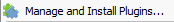
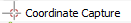
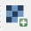
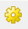
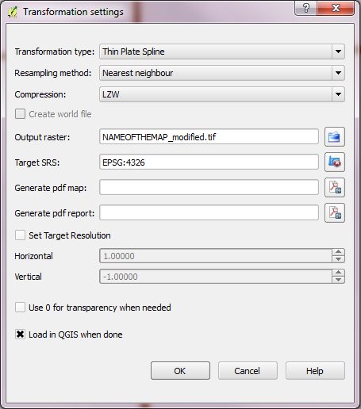

“Mapping the Classical Islamic World”
Maxim Romanov, Department of Classics
Tufts University, Spring 2014
QGIS: Something More Complex
Starting Up
Download and install from www.qgis.org. On the Download page select the version for your system. is an Open Source Geographic Information System (GIS) licensed under the GNU General Public License. The latest release is QGIS 2.0 Dufour. NB: Also see an introduction @ “Programming Historian” (programminghistorian.org/lessons/qgis-layers).
- Win
If you are using a Windows computer, select QGIS Standalone Installer Version x.x (XX bit) (current latest version is Version 2.2 Valmiera). Since most computers now run 64-bit operational system, you should select a 64-bit version. Yet, it is worth checking what system is installed on your computer (try Control Panel / System and Security / System, check “System type”).
- Mac
If you are running a Mac, you will need to follow the link given in Download for Mac OS X section (KyngChaos QGIS download page) and install all the dependencies. This may take a little while, but should get installed without major issues: essentially, the system will tell you what is missing, you will need to download the missing package, or module and install it in order to continue. All required dependencies are available at the KyngChaos QGIS download page.
- →
After surviving nine circles of hell (aka “installation”), Mac users will need to install and activate some useful plugins: in Plugins menu, select  (Manage and Install Plugins); some of the plugins that we’ll need are already installed and they only need to be activated, while others have to be installed. You need the following three:
Coordinate Capture ()
Georeferencer ( )
)
Open Layers ()
Georeferencing: Basic Ideas
In a nutshell, georeferencing means defining the location of some object in physical space. In our case, we will be fitting historical maps onto the system of geographical coordinates by creating spacial references within a geodetic reference system. In plain English this means that we will be assigning specific geographical coordinates to specific points on our maps. Using these data, will transform the image of a map in such a way that we will be able to collect all necessary information from our analog maps, converting it into a digital dataset, which will allow us to create a cumulative dynamic digital map.
Georeferencing, one step at a time...
We will start with fitting historical maps onto the system of geographical coordinates by creating spacial references within a geodetic reference system. NB: a number of manuals on georeferencing with are available online. A very detailed one is available at “Programming Historian” (programminghistorian.org/lessons/georeferencing-qgis).
Open Desktop (whatever version you have installed; the current one is 2.2.0-Valmiera)
In the main menu, open Raster, then find and open Georeferencer. NB: if it is not there, you may have to install this plugin (Plugins > Manage and Install Plugins...)
In the Georeferencer window,  Open raster (NB: you can open it with a button; or through the main menu: File > Open Raster; or using a shortcut Ctrl+o). In the Open raster window, navigate to a folder where you stored all your maps and select the one that you want to georeference.
NB: I strongly recommend to create a separate folder for your maps and keep all the files that will be produced with in this very folder. Trust me, it will make your life easier, especially when you work with many maps.
After you select your map, a Coordinate Reference System Selector will open. Here you need to select a projection / geographic coordinate system. In the ideal world, one can find this crucial piece of information somewhere on the margins of a map. Knowing proper projection makes georeferencing easier and more precise. Unfortunately, as is the case with most historical maps, our maps lack this crucial piece of information. Fortunately, our maps have a consistent coordinate grid with latitudes and longitudes given on the margins. In our case we need WGS 84. Click Ok when you are done. You should now see the image of a map opened in Georeferencer.
It may be convenient to open GCP Table (View > Panels > GCP table), which will show ground control points that you will be adding.
Since is not particularly snappy when it comes to panning high-resolution images, it may be convenient to open the same map in some image viewer on your computer. You will find it easier to navigate when you need to check latitudes and longitudes that are given on margins.
 Zoom in so that you can clearly see the coordinate grid and its crossing points. Check the coordinates of your first point (start from some corner); then select and click on your first point (using mouse is much easier).
Zoom in so that you can clearly see the coordinate grid and its crossing points. Check the coordinates of your first point (start from some corner); then select and click on your first point (using mouse is much easier).
You will be prompted to enter map coordinates. Enter your longitude (X/East) and latitude (Y/North). On the image below the coordinates of the point are 48∘E, 31∘N. Click Ok when you are done.

NB: If your coordinates are in western/southern part of the globe, use minus sign in front of your values.
Now the fun part: you need to repeat this procedure for all remaining crossing points of the grid with coordinates. Since we do not have projection / geographic coordinate system for our maps we need to georeference as many points as possible in order to improve the precision of our work.
After you finish georeferencing the grid and before you proceed to the next step, you need to check the placement of your ground control points (aka small red dots that you have been adding). Zoom in to a point and make sure that the red dot is where it is supposed to be. If it is not, select 
Move GCP Point, and move the point to where it should be (it helps to start at some corner and keep checking the entire map consistently from there).
It is worth saving your work: click Save GCP points, and use the name of the file suggested by (by default, it adds .points to the name of the map). In this case, if you open this map file again, ground control points will be automatically downloaded into and you will be able to continue your work where you finished. Also, it is worth saving your GCP points periodically. Just in case.
Now we need to choose appropriate  Transformation Settings, and make sure that the following settings are selected.
Transformation type: Thin Plate Spline (this transformation type deforms the map in such a way that all ground control points correspond to coordinates that you supplied)
Resampling method: Nearest neighbour (for our purposes it does not really matter what resampling method to use; use Google for more information about information on this issue).
Compression: LZW (this option affects the size of the produced TIFF image; if you select other option the size of the file will be larger)
Output raster: ... (let suggest the name of the file, which will ensure consistent naming of your files. By default adds suffix _modified to the name of the map)
Target SRS: EPSG:4326 (which corresponds to WGS 84)
Check Load in QGIS when done.

Now you can run Georeferencer: click button. After the process is complete, your georeferenced map will appear in the main window of . Minimize Georeferencer, and switch to the main window.
In the main window, run Plugins > OpenLayers plugin > Add Google physical layer ( ). This will add a Google map layer; make sure that your georeferenced map is on top of this new layer (you can drag-n-drop it, to change the order).
). This will add a Google map layer; make sure that your georeferenced map is on top of this new layer (you can drag-n-drop it, to change the order).
Right-click (Two-finger touch on Mac) on the layer with your georeferenced map to open context menu and run Zoom to layer extent. Now you should see you map overlayed on top of a physical Google map.
Double-click on the layer with your map will open Layer properties. On Transparency tab, change Global transparency to about 50%. Click Ok.
Now your map is transparent and you can check how precise your georeferencing. Zoom in to different areas of the map and check if locations on you map correspond to those on Google map. Ideally, the results should be pretty good. On the image below you can see how a historical map is overlayed on top of Google physical map: Mosul/al-Maw“sil and Tal Afar/Tall A”‘far, which are present on both maps, correspond very closely.

Save your work in : Project > Save. Do not forget to open this project when you georeference your next map!
No projection, no grid?
It is very possible that you may have to georeference a map that has neither projection, nor coordinate grid. It is still possible to georeference such maps, although the quality of georeferencing will vary depending on a map. This process is rather similar to the one described above, but since we do not have coordinate grid we’ll need to find anchor points that we can use instead: any feature existing on both maps can be an anchor spot—settlements, shorelines, lakes, etc. (although one should always be careful using water bodies as anchors, since they have a tendency to change their shape in the course of history).
Georeferencing: al-Muqaddasī’s Maps
Earlier, working with you tried to fit al-Muqaddasī’s map over the modern globe. This was a pretty tough assignment, partially because of the nature of al-Muqaddasī’s map—which show relative positions of cities vis-à-viseach other, rather than their absolute geographical locations—and partially because of the limitations of . Using the method describe in the previous section, we can georeference al-Muqaddasī maps more easily and more effectively.
As you remember, Google maps were not very helpful when you tried to overlay al-Muqaddasī’s maps. This was because modern maps lack most historical places. So, Openlayer plugin that loads Google physical map will not be helpful. Instead, we can use Cornu’s georeferenced maps as a base layer for georeferencing.
Collecting coordinates: creating basic data files
...
Running Python scripts
Testing your results
Working with hundreds of data points, one needs a reliable way of tracking one’s progress that will help to ensure that data collected properly and formatted appropriately. After you run script (gisTransformation.py), it will generate files of several different formats. For testing your results you will need .CSV file, which you can load into .
In , in you working project (i.e., where your georeferenced Cornu maps are), go to Layer > Add Text Delimited Layer...
In File Name, click Browse and select your newly generated .CSV file. Click Open.
In Create a Layer from a Delimited Text File you need to select fields that contain geographical coordinates: In X field select field_3 (longitude), in Y field select field_4 (latitude).
in Coordinate Reference System Selector, choose WGS 84 (you need to select the system that corresponds to the system of your project). Click Ok.
Now you should see a series of dots at the places that you have already added to your initial .TXT file with coordinates. Although it is helpful, you cannot really see whether you typed the names of places correctly. Let’s modify this new layer a little.
Open Layer Properties (Win: right-click / Mac: two-finger click on the layer, select Properties). Select Layer tab, and check Label this layer with and select the field that you want displayed (field_3 contains toponyms). Here you can also change properties of your labels: color, font type, font size, offset etc. Change label size so that they are easy to see. You may also want to choose a particular color (this will be particularly convenient when you have more than one layer of this kind). Click Apply to see how labels look like with your current properties. Click Ok when you are done.
In order to add another layer of this kind, just repeat the steps.
Now, when you do any changes to the original .TXT file and run the transformation script, you should see the changes automatically appearing in (switch the layer off and then on in order to update it). This arrangement will help you to keep track of your work, make sure that you geotagged all places from the map, and that you transliterated them correctly.
Creating Routes
We have collected coordinates for settlements of different kind (métropole, capitale, cité, étape) and other geographical features (regions, rivers, lakes, mountains, etc.). Our maps contain another valuable kind of data: trade routes (green lines, itinéraire), but converting this information into a digital dataset requires a different, more complicated procedure. This is because, settlements and routes represent different geometries: settlements are points (at least in our current case), while routes are lines.
Create a new vector layer: Layer > New > New Shapefile Layer... (Shortcut: Ctrl+Shift+N)
In the New Vector Layer window: select Type > Line; make sure that Coordinate Reference System (CRS) is WGS 84 (it should be: EPSG:4326 - WGS 84); add the name of the layer (for convenience, use the name of the map + “_Routes”). Click Ok.
In the open window, save your file (will create a series of files). For convenience and consistency, use the same name as you did for the name of the layer, and save it to the same folder where your other map files are.